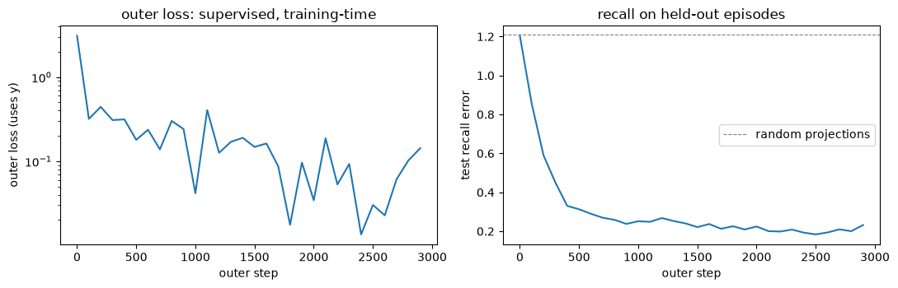

NL-1 aside — where does the self-supervised error come from?
A companion to NL-1, built to answer one question: test-time learning updates the memory by gradient descent on a “self-supervised” loss — but at test time we have no ground-truth labels. So where does the error signal come from? Optional: read it when NL-1 §1 points here.
Runs on CPU in seconds; pure PyTorch, no GPU.
The answer has two levels, and the whole point is to see them side by side in a tiny, CPU-only toy:
Inner loss — self-supervised, no labels. The memory’s update target is manufactured from the input token itself. It runs every forward pass, including test time. No y anywhere.
Outer loss — supervised, real labels. Used only during training, to learn the projections that define the inner task — i.e. to teach the label-free inner loop what is worth memorizing.
The resolution, in one paragraph
In NL-1 §1 the inner loss is \(\ell(W;x_t)=\lVert f_W(\mathbf k_t)-\mathbf v_t\rVert^2\) with \(\mathbf k_t=\theta_K x_t\) and \(\mathbf v_t=\theta_V x_t\) — both views of the same token. So the “label” \(\mathbf v_t\) is a projection of the input, not external supervision: the memory is asked to map one view of the token to another, and the error is just how badly it currently does that (Titans’ “surprise”). That needs no ground truth.
But then why does memorizing \(\mathbf k_t\!\to\!\mathbf v_t\) help anything? Because a separate outer loss, with real labels, runs at training time and shapes \(\theta_K,\theta_V\) so that storing those particular views turns out useful for the real task. Two losses, two timescales:
We’ll build a toy with both and show the killer fact: the same label-free inner loop is useless with random projections and useful after the outer loop has trained them.
The toy: in-context associative recall
A clean task that needs memory and has an obvious outer label. Each episode:
has \(m\) random key→value pairs \((\mathbf k_i,\mathbf v_i)\), \(\mathbf k_i,\mathbf v_i\in\mathbb R^d\) — a fresh, random lookup table, so the model cannot bake it into weights; it must store it in the memory at test time;
presents each pair as a single token\(x_i = R\,[\mathbf k_i;\mathbf v_i]\) — key and value concatenated, then scrambled by a fixed unknown rotation \(R\), so the model must learn how to extract the key view and the value view;
ends with a query token \(x_q = R\,[\mathbf k_j;\mathbf 0]\) (a key, value-part zeroed). The outer label is the matching value \(\mathbf v_j\).
The memory reads the pair-tokens (inner loop, no labels), then we query it; the outer loss checks the recall against \(\mathbf v_j\).
import matplotlib.pyplot as pltimport torchimport torch.nn.functional as Ftorch.manual_seed(0)d, m =6, 2# value/key dim; pairs per episode (well under capacity d)n =2* d # token dim = [key ; value]Rmix, _ = torch.linalg.qr(torch.randn(n, n)) # fixed "world" scrambling of (key, value)def episode(g): K = F.normalize(torch.randn(m, d, generator=g), dim=1) # m keys Vv = torch.randn(m, d, generator=g) # m values (the random lookup table) X = (Rmix @ torch.cat([K, Vv], dim=1).t()).t() # m scrambled pair-tokens (m x n) j = torch.randint(m, (1,), generator=g).item() # which key we'll be quizzed on xq = Rmix @ torch.cat([K[j], torch.zeros(d)]) # query token: key present, value zeroedreturn X, xq, Vv[j] # tokens, query, ground-truth answer (outer label)X, xq, y = episode(torch.Generator().manual_seed(99))print("episode:", X.shape[0],"pair-tokens of dim", X.shape[1],"(scrambled [key;value]); 1 query; 1 label y",)print("a token mixes key & value -> the model must LEARN to extract each view:",tuple(X[0].shape),)
episode: 2 pair-tokens of dim 12 (scrambled [key;value]); 1 query; 1 label y
a token mixes key & value -> the model must LEARN to extract each view: (12,)
The two losses, in code
memory() is the inner loop. Read it carefully: it takes the tokens and the projections, and never sees y. Its update target v is a projection of the token — that is the entire self-supervised signal. The outer loss is a separate function that does use y.
def inner_loss(W, k, v):return ((W @ k - v) **2).sum() # self-supervised: v is a VIEW of the token, not a labeldef memory(X, xq, tK, tV, eta=1.0):# Inner loop: build the fast memory W from the tokens alone. NO label y is used here. W = torch.zeros(d, d) trace = []for x in X: k = F.normalize(tK @ x, dim=0) # key view of the token v = tV @ x # value view of the SAME token (the 'target') trace.append(inner_loss(W, k, v)) # surprise on this token (computed without y) W = W + eta * torch.outer(v - W @ k, k) # = one GD step on inner_loss (the delta write) kq = F.normalize(tK @ xq, dim=0)return W @ kq, torch.stack(trace) # recall prediction, inner-loss tracedef outer_loss(pred, y):return ((pred - y) **2).mean() # supervised: y IS the held-out ground-truth valuedef fresh_proj(scale=0.5, seed=0): # slow weights = projections defining what to store g = torch.Generator().manual_seed(seed)return (torch.randn(d, n, generator=g) * scale).requires_grad_(True), ( torch.randn(d, n, generator=g) * scale ).requires_grad_(True)print("inner_loss uses (W, k, v) -- no y. outer_loss uses (pred, y) -- the label.")
inner_loss uses (W, k, v) -- no y. outer_loss uses (pred, y) -- the label.
A. Random projections: the inner loop runs, but recall fails
Before any training, run the exact same label-free inner loop with random\(\theta_K,\theta_V\). The inner losses are perfectly well-defined (no y needed) and the memory does store something — but it’s the wrong something, so recall is no better than noise (relative error \(\approx 1\)).
def mean_recall_err(tK, tV, seed, nep=300): g = torch.Generator().manual_seed(seed) tot =0.0for _ inrange(nep): X, xq, y = episode(g) pred, _ = memory(X, xq, tK, tV) tot += ((pred - y).norm() / y.norm()).item()return tot / neptK, tV = fresh_proj(seed=3)X, xq, y = episode(torch.Generator().manual_seed(99))pred, trace = memory(X, xq, tK, tV)print("inner losses per token (computed with NO label):", [round(t.item(), 2) for t in trace],)print(f"outer recall error on held-out episodes (random projections): {mean_recall_err(tK, tV, seed=7):.2f}")print("=> the self-supervised loop is happily running; it just hasn't been told what's worth storing.")
inner losses per token (computed with NO label): [4.66, 3.37]
outer recall error on held-out episodes (random projections): 1.22
=> the self-supervised loop is happily running; it just hasn't been told what's worth storing.
B. The outer loop teaches it what to store
Now train only the projections \(\theta_K,\theta_V\) on the outer loss (the labeled recall error), backpropagating through the inner memory updates — exactly M5’s MAML move (gradients flow through the inner steps; here the delta write is differentiable, so a plain .backward() reaches the projections). The fast memory \(W\) is still built by the same label-free inner loop; we are only learning what views to feed it.
tK, tV = fresh_proj(seed=3)opt = torch.optim.Adam([tK, tV], lr=1e-2)g = torch.Generator().manual_seed(1)outer_curve, recall_curve, steps = [], [], []for it inrange(3000): opt.zero_grad() L =0.0for _ inrange(8): # a batch of episodes X, xq, y = episode(g) pred, _ = memory(X, xq, tK, tV) # inner loop (no y) ... L = L + outer_loss(pred, y) # ... scored by the outer loss (y) (L /8).backward() opt.step() # trains the PROJECTIONS through the inner updatesif it %100==0: outer_curve.append((L /8).item()) steps.append(it) recall_curve.append(mean_recall_err(tK.detach(), tV.detach(), seed=7, nep=60))rand_baseline = mean_recall_err(*fresh_proj(seed=3), seed=7, nep=60)fig, (a1, a2) = plt.subplots(1, 2, figsize=(11, 3.6))a1.plot(steps, outer_curve)a1.set_xlabel("outer step")a1.set_ylabel("outer loss (uses y)")a1.set_title("outer loss: supervised, training-time")a1.set_yscale("log")a2.plot(steps, recall_curve)a2.set_xlabel("outer step")a2.set_ylabel("test recall error")a2.set_title("recall on held-out episodes")a2.axhline(rand_baseline, ls="--", c="gray", lw=0.8, label="random projections")a2.legend()plt.tight_layout()plt.show()print(f"recall error random {recall_curve[0]:.2f} -> trained {recall_curve[-1]:.2f} (1.0 = noise)")

recall error random 1.20 -> trained 0.23 (1.0 = noise)
C. At test time: only the label-free inner loop runs
The payoff. On fresh episodes the model has never seen, we run just the inner loop — no labels, no outer loss, no gradient on the projections — and recall works. The memory learns each new random lookup table at test time, purely from the tokens.
tKf, tVf = tK.detach(), tV.detach()print(f"mean test recall error, brand-new episodes (inner loop only, NO labels): "f"{mean_recall_err(tKf, tVf, seed=12345):.2f} (random projections were ~{rand_baseline:.2f})")# a few fresh episodes, end to end -- the inner loop never touches yg = torch.Generator().manual_seed(2024)errs = []for _ inrange(6): X, xq, y = episode(g) pred, trace = memory(X, xq, tKf, tVf) # builds memory from tokens alone, then recalls errs.append(((pred - y).norm() / y.norm()).item())print("6 fresh episodes, recall relative error:", [round(e, 2) for e in errs])print(f"last episode's inner losses while reading (no y): {[round(t.item(), 1) for t in trace]}")print("no label was used to BUILD or QUERY the memory -- the tokens supervised themselves.")
mean test recall error, brand-new episodes (inner loop only, NO labels): 0.24 (random projections were ~1.21)
6 fresh episodes, recall relative error: [0.67, 0.1, 0.11, 0.27, 0.57, 0.15]
last episode's inner losses while reading (no y): [2.6, 1.8]
no label was used to BUILD or QUERY the memory -- the tokens supervised themselves.
So — where does the error come from?
From the data, twice, at two levels:
Inner (self-supervised, no labels). The update target is a view of the input token (\(\mathbf v_t=\theta_V x_t\)). The error is the memory’s own reconstruction/recall error on that view — well-defined with zero ground truth. This is what runs at test time, and it’s how the memory “learns the sequence on the fly.” (In §A you saw it run even with random projections.)
Outer (supervised, real labels). A separate task loss, with ground truth, runs at training time and shapes the projections \(\theta_K,\theta_V\) — i.e. it teaches the label-free inner loop what to extract and store. (In §B that’s what turned a useless inner loop into a working one: recall went from \(\approx 1\) to well below it, with the inner mechanism unchanged.)
Two earlier modules are exactly these two levels:
the inner loop is NL-1 §1’s TTT write — \(\mathbf k_t,\mathbf v_t=\theta_K x_t,\theta_V x_t\), memory updated by a GD step on \(\lVert f_W(\mathbf k_t)-\mathbf v_t\rVert^2\);
training it by backprop through those inner updates is M5’s MAML — outer gradients flow through an inner optimization.
So “test-time learning” never needed labels at test time: the data supervises itself in the inner loop, and the labels did their job earlier, in the outer loop, deciding what that self-supervision should target. (A second, even more intuitive flavor of the same idea: in next-token prediction the future of the stream is the label for its past — the sequence supervises itself one step late. Same principle, different view.)